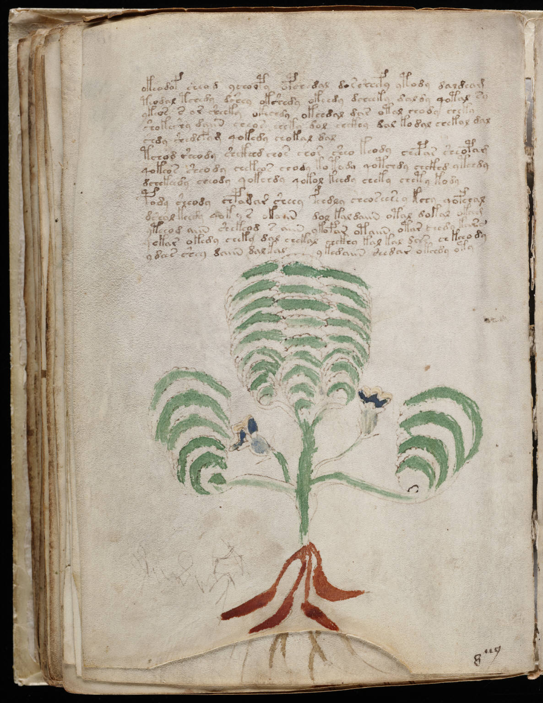

f66v
1okeodof sheod ychoopy opch dal dorshefy ytody daldeam2teodal tchedy dshey okshedy okeedy dcheeky daldy qotal sy3ytos s ar sheeky okechdy okchdal dar otal chody cheky4shokeshy daiin cheos shky dol shckhy dal kodal chekal dal5shdy shedefam qokedy chokal dal6tchod sheody shckhhd chos chor sheo keody chepar shsopam7qokeos sheody chekeor chody kotody qotchdy chckhd ytchdy8dchekcsdy cheody qokchdy qokol keedy cheky chety kody9pody sheody chpadar sheey feedly cheoseesey kchy qofchal10dshol keedy qokyr okaiin dol kal daiin otal dakar okag11yteeod aiin shekeod s aiin ykofar otaiin otar chedy kara12qekar okedy cheky dal chekal chckhy kal kal dar chkchody13ydees shey daiin dalkalykedaiin shedar okchdy oty
